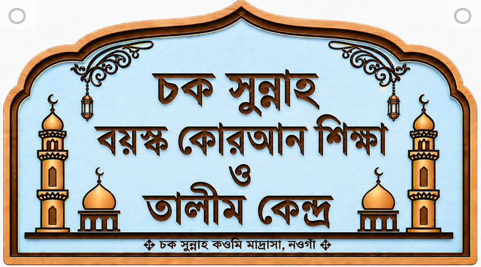
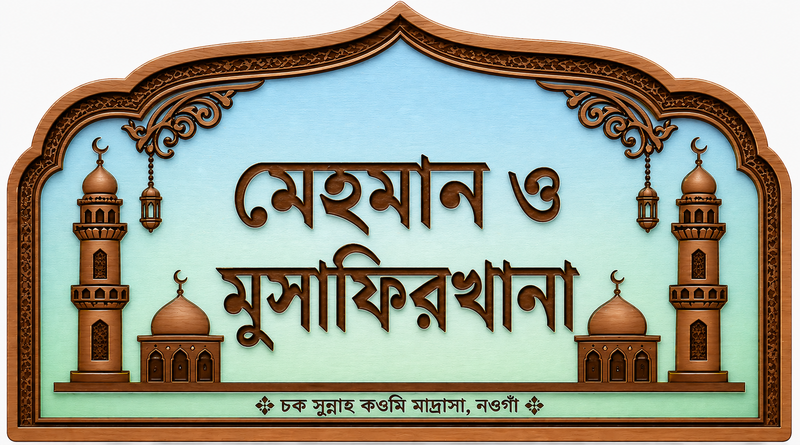
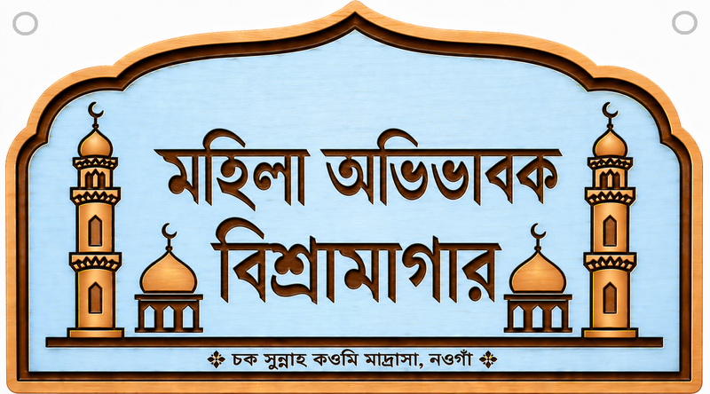
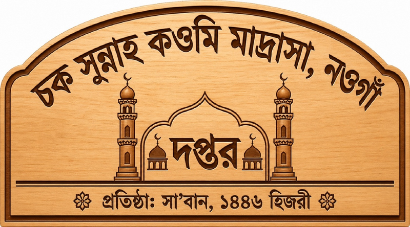
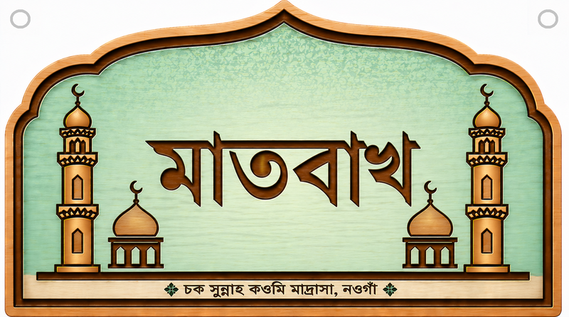

চক সুন্নাহ কওমি মাদ্রাসা, নওগাঁ
শা’বান ১৪৪৬ হিজরিতে প্রতিষ্ঠিত চক সুন্নাহ কওমি মাদ্রাসা দ্বীনি তা’লিম ও তরবিয়াতের মাধ্যমে আল্লাহওয়ালা, সুশিক্ষিত, দেশপ্রেমিক ও সুনাগরিক প্রজন্ম গড়ার লক্ষ্যে কাজ করছে। শিক্ষা, আমল, আখলাক ও সুন্নাহর অনুশীলনকে একই পরিবেশে বিকশিত করাই প্রতিষ্ঠানের প্রচেষ্টা।
নামটি কী বলছে?
“চক” শব্দটি বাংলায় বিভিন্ন অর্থে ব্যবহৃত হয় এবং প্রসঙ্গ অনুসারে এর অর্থ ভিন্ন হতে পারে। গ্রামীণ এলাকায় “চক” বলতে গ্রামের ছোট একটি নির্দিষ্ট এলাকা বা পাড়াকে বোঝানো হয়। “চক সুন্নাহ” বলতে তাই এমন একটি স্থানকে বোঝানো হতে পারে, যেখানে সুন্নাহ কওমি মাদ্রাসা অবস্থিত।
“সুন্নাহ” শব্দটি আরবি سُنَّة থেকে এসেছে। ইসলামের পরিভাষায় এটি রাসূলুল্লাহ সাল্লাল্লাহু আলাইহি ওয়াসাল্লামের জীবনযাপন, কর্মকাণ্ড, বাণী এবং অনুমোদিত কাজকে বোঝায়।
আরবি নাম
المدرسة القومية چك السنة، نوغاون
- مدرسة: মাদ্রাসা বা ধর্মীয় শিক্ষা প্রতিষ্ঠান।
- القومية: কওমি শিক্ষাপদ্ধতি।
- السنة: রাসূলুল্লাহ সাল্লাল্লাহু আলাইহি ওয়াসাল্লামের প্রদর্শিত পথ।
- چك (চক): আরবিতে “چ” অক্ষরটি সরাসরি নেই, তবে উর্দু ও ফারসি থেকে ধার নিয়ে আরবি লিপিতে এটি ব্যবহার করা যায়। এটি স্থানীয় “চক” নামটি যথাযথভাবে ধরে রাখতে সাহায্য করে।
- نوغاون: নওগাঁ জেলা।
আমাদের লক্ষ্য
- সহিহ দ্বীনি শিক্ষা ও কুরআনের সঙ্গে গভীর সম্পর্ক তৈরি করা।
- শিক্ষার্থীর আমল, আদব, আখলাক ও শৃঙ্খলা উন্নত করা।
- ওস্তাদ, অভিভাবক ও সমাজের সমন্বিত অংশগ্রহণ নিশ্চিত করা।
- স্বচ্ছতা, সাদাসিধা জীবন ও শূরাভিত্তিক পরিচালনা বজায় রাখা।
বিভাগ ও সেবাসমূহ
মাদ্রাসার চালু শিক্ষা বিভাগ ও সহায়ক ব্যবস্থাগুলো নিচে দেখানো হলো। ভর্তি ও আসনসংক্রান্ত সর্বশেষ তথ্যের জন্য কর্তৃপক্ষের সঙ্গে যোগাযোগ করুন।




